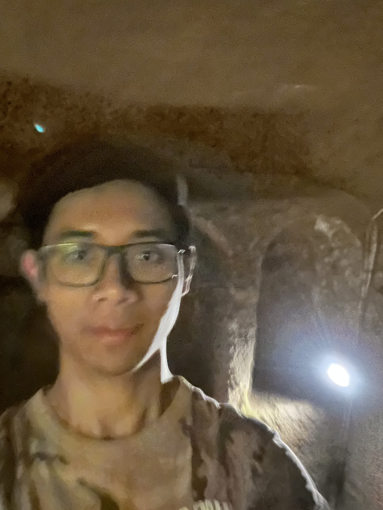
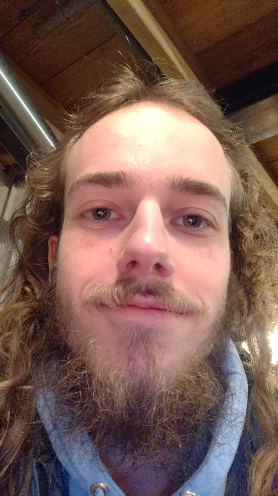
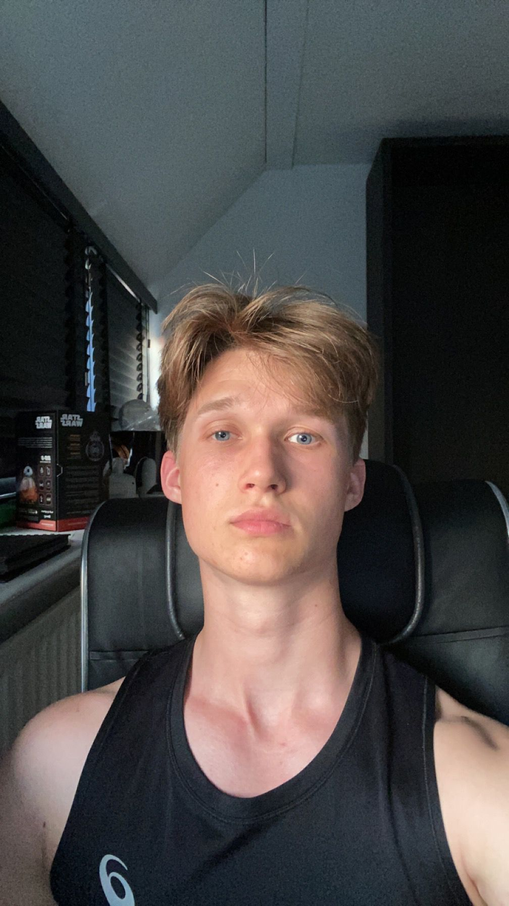

Alvin Udijana
Ik ben een tweederjaars informatiekunde student die hiervoor een jaar Informatica gestudeerd heeft.
Ik game (te veel).

Fardeen Wieliams
Ik ben een tweedejaars Informatiekunde student die hiervoor een jaar Business Administration gestudeerd heeft.
Buiten de opleiding om heb ik een eigen onderneming (lekker geld maken) en spendeer ik mijn tijd graag als ik tijd heb aan gamen.
Om deze reden heb ik soms nog last van tijdsmanagement, maar als alles gedaan wordt aan het einde van de dag is iedereen blij.

Milan Wassenberg
Ik ben een tweedejaars Informatiekunde student. In mijn vrije tijd vind ik het leuk om te gamen, series te kijken en te bellen met vrienden.

Simon Bosch
Ik ben een tweedejaars Informatiekunde student die hiervoor een jaar Kunstmatige intelligentie gestudeerd heeft.
Mijn hobby's zijn de sportschool, eten, slapen en (controversieel genoeg) school. Ik gebruik deze pagina ook om
over mijn ervaring van het project te praten. De samenwerking verliep erg soepel en ging erg goed. We begonnen
relatief laat met het ontwerpen van de website, maar alles wat we in de website wilde implementeren is uiteindelijk
gelukt. Het uitvoeren van het experiment ging erg goed en ik vond de resultaten enorm interessant. Ik had
namelijk niet verwacht dat twee chatbots die zonder menselijke interventie een onderzoek uit moesten voeren
zo ver konden komen. Ik was hierdoor positief verrast.